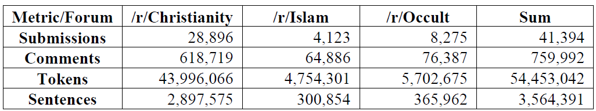
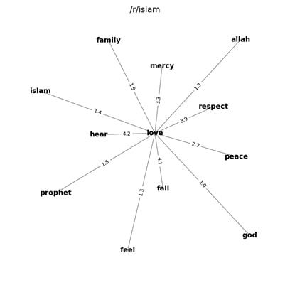
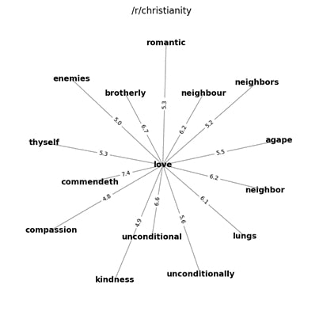
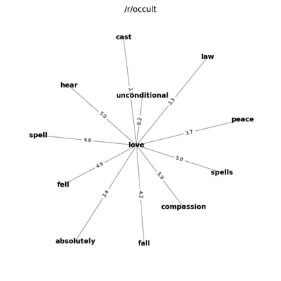
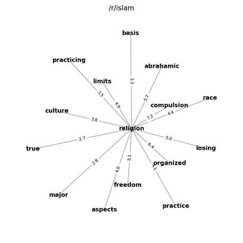
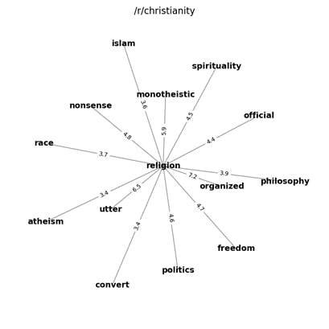
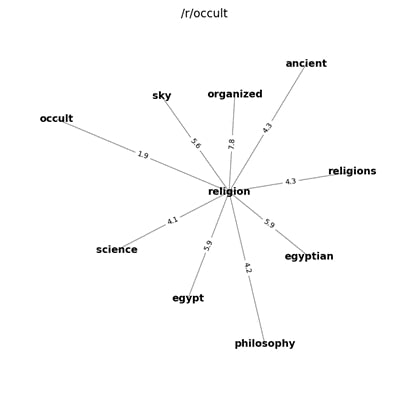
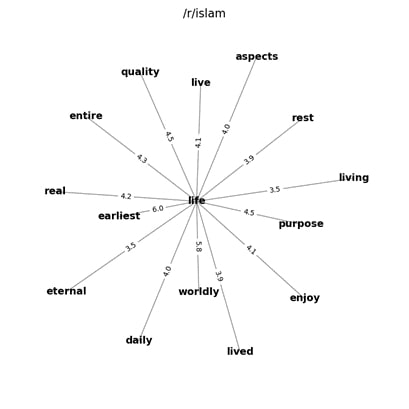
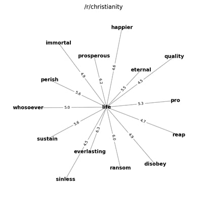
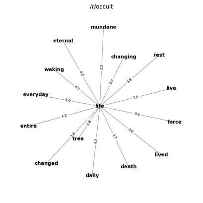

1. Introduction
One of the most influential concepts in Digital Humanities (DH) in recent years is Moretti’s (2000) idea of Distant Reading, more precisely the application of computational methods to analyze and visualize large amounts of text to gather new insights. Distant Reading has led to various successful projects especially in literary studies and linguistics (cf. Jänicke et al., 2015) but also religious studies, e.g. to analyze famous religious texts (McDonald, 2014; Slingerland et al.; 2017; Verma, 2017). We want to build primarily upon the work of (Pfahler et al., 2018) who applied topic modeling on Muslim online forums to investigate what this community is predominantly talking about. They identified several main topic clusters about eating, family and politics which are talked about the most.
We want to further explore the application and potential benefit of Distant Reading-methods for the use case of religious online forums. Our research goal is to examine the content, language, topics and sentiments in religious online forums of different religious subgroups to identify differences and similarities and learn more about the way of life and beliefs of these communities.
While we explore multiple methods like named entity recognition, topic modeling and sentiment analysis, in the following contribution we report upon our results for the method of collocation analysis. Via collocations, we want to analyze differences in the way several religious key concepts are discussed in online forums of different religious subgroups.
2. Methods
We have chosen Reddit (https://www.reddit.com/) for data collection since it is rather easy to scrape and one of the largest platforms on the internet. Furthermore, various religious subgroups are represented enabling us to compare content more easily.
We have acquired all submissions (threads) for the time span of July 1, 2018 to July 1, 2019 for the three subreddits /r/Christianity (https://www.reddit.com/) , /r/Islam (https://www.reddit.com/r/islam/) and /r/Occult (https://www.reddit.com/r/occult/) . We chose the first two since they represent the two largest monotheistic religions and included the third one to also examine a rather esoteric religious direction.
We have acquired over 700,000 comments and around 50 million tokens (figure 1).
Figure 1: Corpus statistics
We have chosen five as maximum length for a collocation and measure the strength of collocations via Pointwise Mutual Information (PIM) which scores the collocations based on their actual co-occurrence in the corpus in proportion to their expected co-occurrence if they were independent (Church & Hanks, 1989). To visualize collocations, we place the key concept in the middle and the collocations around them. The higher the PMI-value, the closer the concept. We also put the exact PMI-score on the edges.
3. Results
In the following we showcase the use case for the spiritual key terms “love”, “religion” and “life” and highlight some insights we gained.
Figure 2: Collocations for “love” in /r/Islam
Figure 3: Collocations for “love” in /r/Christianity
Figure 4: Collocations for “love” in /r/Occult
In the Christian subreddit, we find that love shows most connections with idioms/quotes from the bible (“unconditionally”, “enemies”, “agape”; figure 3). In contrast, we find strong associations with positive terms, words for god and the prophet as well as for “family” in the Muslim forum (figure 2) which is in line with Pfahler et al. (2018) showing a strong focus on family-related topics in Muslim forums. For /r/occult we find rather fitting associations with the notion of magic, thus showing the rather esoteric content of this forum (figure 4).
Figure 5: Collocations for “religion” in /r/Islam
Figure 6: Collocations for “religion” in /r/Christianity
Figure 7: Collocations for “religion” in /r/Occult
Many terms in /r/Islam and the concept of religion point to discussions about religious directions e.g. “organized”, “abrahamic”, “culture”, “major” (figure 5). The connection with race might be connected to the racism Muslims face in western countries. Quite similarly, /r/Christianity also shows collocations describing the discussion about other religions (“organized”, “islam”, “false”) also pointing to rather heated discussions (“utter”, “nonsense”; figure 6). /r/Occult shows collocations specifying the religion and other world views (“Egypt”, “ancient”, “philosophy”, “science”; figure 7).
Figure 8: Collocations for “life” in /r/Islam
Figure 9: Collocations for “life” in /r/Christianity
Figure 10: Collocations for “life” in /r/Occult
In /r/Christianity, “life” is associated with words pointing to the afterlife (“everlasting”, “eternal”, “immortal”) while in /r/Islam, it is rather tied to terms describing a direction in life (“purpose”, “meaning”; figure 8 and 9). However, both subreddits show connections with rather positive words except for death concepts. Those collocations are indeed stronger for /r/Islam (“rest”, “death”, “short”). The collocations are quite varied for /r/occult (figure 10).
Overall, we were able to gather some first insights like the strong difference of /r/occult, connections to family and politics for some key concepts in the Muslim forum or the focus on discussions about religious directions for the concept of religion in all forums.
We plan to investigate other methods of computational text analysis but also want to apply more in-depth qualitative analysis of parts of our corpus via content analysis to confirm and evaluate some of our assumptions we derived via the collocation visualizations.
References
Church, K. W., & Hanks, P. (1989). Word association norms, mutual information, and lexicography. Proceedings of the 27th Annual Meeting on Association for Computational Linguistics, 76–83. https://doi.org/10.3115/981623.981633
Jänicke, S., Franzini, G., Cheema, M. F., & Scheuermann, G. (2015, May). On Close and Distant Reading in Digital Humanities: A Survey and Future Challenges. In EuroVis (STARs) (pp. 83-103).
McDonald, D. (2014). A text mining analysis of religious texts. The Journal of Business Inquiry, 13(1), 27-47.
Moretti, F. (2000). Conjectures on world literature. New left review, 54-68.
Pfahler, L., Elwert, F., Tabti, S., Morik, K., & Krech, V. (2018). What do you do with 5 million posts?? Versuche zum distant reading religiöser Online-Foren. DHd Konferenz 2018, 335-338.
Slingerland, E., Nichols, R., Neilbo, K., & Logan, C. (2017). The distant reading of religious texts: A “big data” approach to mind-body concepts in early China. Journal of the american academy of religion, 85(4), 985-1016.
Verma, M. (2017). Lexical analysis of religious texts using text mining and machine learning tools. International Journal of Computer Applications, 168(8), 39-45.